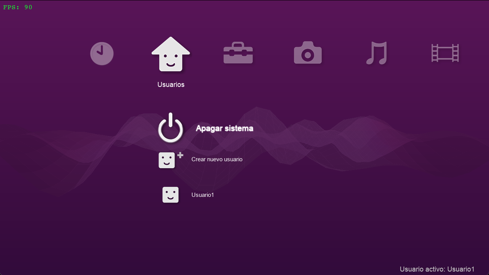
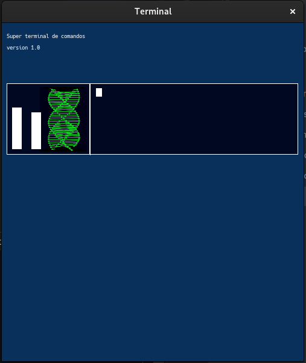

Desarrollador de aplicaciones con IA Frontend / Backend Llevo utilizando la inteligencia artificial desde antes de que se hiciera viral con la salida de ChatGPT, durante los años 2021–2022 utilizaba la plataforma anterior de IA de OpenAI para crear las webs que me solicitaban en el grado. La primera versión pública de ChatGPT de OpenAI salió el 30 de noviembre de 2022.

Antes de que existiera ChatGPT como interfaz abierta, OpenAI ofrecía acceso a sus modelos mediante una plataforma de prueba basada en API, pero no era pública: Habia que registrarte en OpenAi en la web con una cuenta de gmail y pedir acceso a la API. Una vez aprobado, podías probar los modelos GPT-3, incluyendo Davinci, Curie, Babbage y Ada. Me obsesioné con la creación de elementos mediante IA y me considero experto en comunicarme con ella Actualmente no solo uso chat gpt uso varias desde Gemini hasta Claude incluido. Ahora estoy muy enfocado en antigrabity y forks similares para desarrollar programas utiles. Actualmente me encuentro realizando un Editor de vídeo con Python en Frontend y C++17 en el backend.https://rockyvideoeditor.neocities.org/
Objetivo: Trabajar para un equipo de desarrollo I+D para construir una aplicacion o servicio. Creacion de una identidad profesional. (Sobre un software). Me considero una persona muy creativa con hablidades de 3D en Blender. Uso Blender desde 2019 Me gusta darle personalidad a mis programas y darle mi propia identidad. Me parece mal el uso de la ia para las identidades visuales (me causan mucho rechazo)
Modelado y Texturizado 3D
- Modelado 3D avanzado: Amplia experiencia en la creación de modelos detallados y optimizados en Blender.
- Texturizado funcional: Conocimientos sólidos de texturizado; aunque no es mi punto más fuerte, sé desenvolverme y aplicar flujos de trabajo básicos.
Rocky Video Editor https://rockyvideoeditor.neocities.org/
Editor de video opensource Hecho en Python y en c++17 (Funcional pero en desarrollo)
xmb.py
https://github.com/rdr-retro/xmb.pyl

xmb.py es un sistema de menú inspirado en la interfaz XMB de PlayStation, implementado en Python
usando Pygame.
Está diseñado para manejar múltiples categorías, submenús, archivos y reproducción de música con
visualización dinámica, con soporte completo de animaciones y layout adaptable a cualquier
resolución.
Super-terminal
https://github.com/rdr-retro/Super-terminal

Creada en c. La aplicación permite ejecutar comandos del sistema y visualizar su salida en una
interfaz gráfica, además de mostrar el uso de CPU y RAM en tiempo real.
Técnico en Sistemas Microinformáticos (Prácticas F.P.)
Informática Empresarial | Guadalajara, España | Octubre 2025 – Diciembre 2025- Diagnóstico y Reparación Avanzada de equipos (hardware y software), resultando en una alta tasa de resolución de incidencias.
- Implementación de protocolos de Clonación y Backups de Sistemas para garantizar la continuidad operativa.
- Gestión y mantenimiento preventivo de componentes hardware (montaje, sustitución y actualización).
Hosteleria
Restaurante Los Cristales | Brihuega, Guadalajara, España | Junio 2022- Colaboración activa en la gestión de operaciones diarias, destacando en la coordinación de tareas y la rapidez en el servicio.
- Demostración de adaptabilidad y proactividad en entornos de alta presión y ritmo rápido.
Educación Secundaria Obligatoria
Grado Medio en Sistemas Microinformáticos y Redes (SMR)
I.E.S. Brianda de Mendoza | Guadalajara, España | Finalizado en 2025Formación integral en infraestructura de red, sistemas operativos, y mantenimiento de equipos.
- Inteligencia Artificial y Desarrollo:
- Prompt Engineering Avanzado (Brivecoding): Optimización de consultas para modelos de IA (LLMs) para generar código eficiente y soluciones de software.
- Programación en python, c,c++, java, y basicos web html/css/js. Experiencia en desarrollo de proyectos funcionales y lógica de negocio.
- Sistemas Microinformáticos:
- Diagnóstico Hardware/Software: Resolución de fallos en PCs, portátiles y periféricos.
- Virtualización y Sistemas Operativos: Manejo de entornos de virtualización y administración básica de Windows/Linux.
- Competencias Interpersonales (Soft Skills):
- Autoeficacia y Autogestión: Capacidad probada para asumir retos y gestionar el propio aprendizaje de forma independiente.
- Resolución de Problemas Técnicos: Enfoque lógico y estructurado para identificar y solucionar incidencias.